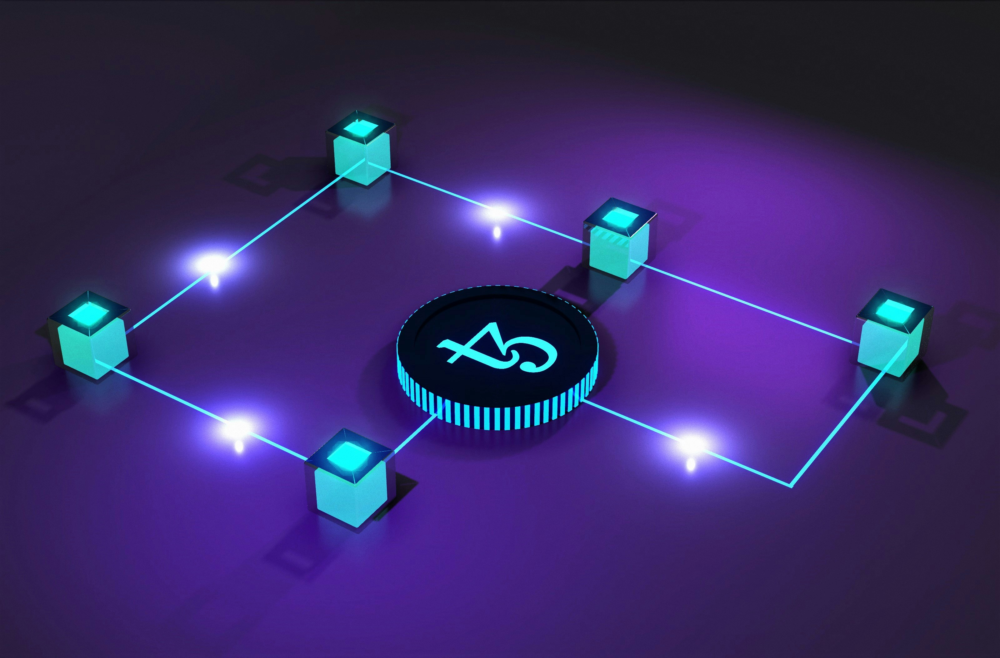

MyInvois API Integration: What Your Developer Needs to Know Before Connecting Your Legacy System
"Can't we just call the LHDN API and be done with it?" That's usually the first question I get when a business owner asks about connecting their existing system to MyInvois. The honest answer: the API call is the easy part. Everything around it—authentication, digital signatures, document formatting, and validation handling—is where the real work lives.
If you're running a legacy .NET system and planning to integrate directly with LHDN's MyInvois platform (rather than going through a third-party middleware provider), here's what your developer actually needs to understand before writing a single line of code.
Direct Integration vs. Middleware: Choose First
Before any technical work, decide how you're connecting. There are two realistic paths:
- Direct API integration — your system talks to MyInvois directly. Full control, no per-document fees, but you own the entire compliance burden (signing, retries, updates when LHDN changes the spec).
- Middleware / service provider — you send invoices to an intermediary that handles MyInvois submission. Faster to launch, but ongoing fees and a dependency on their uptime.
For businesses with steady, moderate invoice volumes and an in-house or retained developer, direct integration usually pays off within 12–18 months. For very high volumes or businesses with no technical support, middleware is often the safer choice. This article assumes you've chosen direct integration.
The Five Things the API Actually Requires
LHDN's MyInvois API isn't a single "send invoice" call. A compliant submission involves several steps that must happen in the right order:
1. Authentication (OAuth 2.0)
MyInvois uses OAuth 2.0 client credentials. Your system authenticates with a Client ID and Client Secret to obtain an access token, which is then attached to every API request. Tokens expire, so your integration needs to cache and refresh them automatically rather than logging in on every call.
For legacy .NET Framework systems, watch the TLS version. MyInvois requires TLS 1.2 or higher. Older .NET Framework apps frequently default to TLS 1.0/1.1 and fail with cryptic connection errors. This single issue accounts for a surprising number of stalled integrations.
2. Building the Document (UBL 2.1)
Invoices must be formatted as UBL 2.1—an XML standard—or JSON following LHDN's schema. Every required field (supplier TIN, buyer details, classification codes, tax types, totals) must be present and correctly typed. A missing or malformed field means rejection, not a warning.
3. Digital Signing
This is the step most teams underestimate. Each document must be digitally signed using a valid digital certificate so LHDN can verify authenticity and integrity. That means implementing XML digital signatures (XAdES) correctly—canonicalization, hashing, and certificate handling all have to match the spec exactly. Get one step wrong and the document is rejected with little explanation.
4. Submission and Asynchronous Validation
When you submit a document, MyInvois doesn't validate it instantly. It returns a submission ID, then validates asynchronously. Your system must poll (or handle callbacks) to learn whether each document was Valid, Invalid, or still InProgress. Treating submission as "fire and forget" is a common and costly mistake.
5. Handling the Outcome
Once validated, you receive a unique identifier and a validation link (often rendered as a QR code on the invoice). You must store these, attach them to the customer's invoice, and be able to retrieve or cancel documents within the allowed window.
The 72-hour rule: A validated e-invoice can only be cancelled within 72 hours of validation. After that, corrections require issuing a credit note or debit note instead. Your system's workflow has to enforce this—manual cancellation outside the window simply won't be accepted.
Where Legacy Systems Specifically Struggle
Integrating MyInvois into a modern greenfield app is straightforward. Doing it inside a 10-year-old .NET system is where the friction appears:
- TLS and security protocols — old framework versions need explicit configuration to negotiate TLS 1.2, and sometimes a framework upgrade.
- XML signing libraries — legacy systems may lack modern cryptography libraries; XAdES signing often needs additional packages or a signing microservice.
- Data quality gaps — legacy databases frequently store customer TINs, addresses, and classification data inconsistently (or not at all). The API demands clean, complete data.
- No retry/queue infrastructure — older systems built for synchronous workflows have nowhere to park documents that are pending asynchronous validation.
- Tight coupling — invoicing logic buried inside UI code makes it hard to insert a clean integration layer without risking the rest of the system.
The cleanest pattern for a legacy system is to build a small, separate integration service that handles authentication, signing, submission, and polling—then have the legacy app talk to that service. This isolates the compliance logic, makes it independently testable, and means LHDN spec changes only touch one component.
The Sandbox Is Not Optional
LHDN provides a preproduction (sandbox) environment. Every integration should be fully tested there first—authentication, signing, submission, validation, cancellation, and credit notes—before touching production. The sandbox is also where you discover that your data isn't as clean as you assumed.
Budget real time for sandbox testing. Teams that skip it to "save time" almost always lose more time later debugging production rejections under deadline pressure.
A Realistic Integration Timeline
For a typical legacy .NET system with a competent developer, expect:
- Week 1–2: Data audit and cleanup (TINs, classification codes, buyer details), plus sandbox account setup.
- Week 2–4: Build the integration layer—auth, document mapping, digital signing.
- Week 4–6: Submission, polling, and outcome handling; sandbox end-to-end testing.
- Week 6–8: Edge cases—cancellations, credit/debit notes, error recovery—then a controlled production rollout.
Rushing this into two weeks is possible but creates fragile integrations that break the first time LHDN tweaks the schema or you hit an unusual transaction. Steady and tested beats fast and brittle.
Connecting Your Legacy System to MyInvois?
SteadyDevs builds clean, isolated MyInvois integration layers for legacy .NET systems—handling authentication, digital signing, validation, and error recovery without destabilising your existing software. Get a free consultation to map out your integration.
Get Your FREE ConsultationFrequently Asked Questions
Both are valid. Direct integration gives you full control and no per-document fees but more responsibility. Middleware is faster to launch and offloads compliance, at the cost of ongoing fees and a third-party dependency. The right choice depends on your invoice volume and available technical support.
The most common cause is TLS version. MyInvois requires TLS 1.2+, and older .NET Framework applications often default to TLS 1.0/1.1, causing connection failures that look like authentication errors. Forcing TLS 1.2 in your code or configuration usually resolves it.
Digital signing (XAdES) and handling asynchronous validation. Both are easy to implement almost correctly—and 'almost correct' means rejected documents with unhelpful error messages. These are the steps where experience saves the most time.
Only within 72 hours of validation. After that window you must issue a credit note or debit note to correct it. Your system's workflow needs to enforce this rule rather than assuming cancellation is always available.